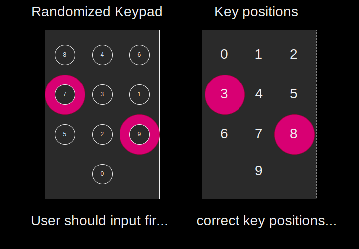

M5 Demo Tutorial
The goal of this demonstration is to showcase the successful integration of the garbled circuit technology into TEE nodes, thereby demonstrating our finalized core security proof of concept.
However, the garbling scheme implemented on TEE nodes and the Android client is not yet optimized for display circuits, as previously mentioned.
To address this, we have provided a script client for testing the garbled circuit production on TEE nodes. You can also verify that the end-to-end solution is functional using an Android client.
Please note, however, that the evaluation performance of the garbled circuit is currently poor, making the validation screen difficult to read and not representative of the intended user experience.
T
prerequiste
| Install Docker | Install Podman |
|---|---|
| docker | podman |
| docker-compose | podman-compose |
NOTE: usually when using docker or docker-compose you MUST also use sudo; and conversely you MUST NOT be root with podman and podman-compose
sudo apt-get install jq curl wget
Demo with script
1. Launch the blockchain
-
prepare a temp folder eg:
mkdir interstellar_demo && cd interstellar_demo -
get the following docker compose file: docker-compose.yml eg:
curl -o docker-compose.yml https://raw.githubusercontent.com/Interstellar-Network/Interstellar-Book/docker-compose/docker-compose.yml -
download the following
docker-ipfs-init.sheg:curl -o docker-ipfs-init.sh https://raw.githubusercontent.com/Interstellar-Network/Interstellar-Book/docker-compose/docker-ipfs-init.sh- check that the file is in the same directory as docker compose
ls -al total 20 drwxr-xr-x 2 jll jll 4096 Feb 9 16:46 . drwxr-xr-x 13 jll jll 4096 Feb 8 19:11 .. -rw-r--r-- 1 jll jll 6383 Feb 9 16:52 docker-compose.yml -rw-r--r-- 1 jll jll 222 Feb 9 15:06 docker-ipfs-init.sh -
needed only if using docker:
- launch docker service:
sudo service docker start
podman does not require a service/daemon
- launch docker service:
-
launch the full stack with the following command in the created directory:
sudo docker compose down --timeout 1 && sudo docker compose up --force-recreate
>replacedocker composewithpodman-composeif you want to use podman instead of docker -
wait a few seconds until you see this kind of lines repeating:
2022-10-05 14:17:12 [ocw-circuits] Hello from pallet-ocw-circuits.
2022-10-05 14:17:12 [ocw-circuits] nothing to do, returning...
2022-10-05 14:17:12 💤 Idle (0 peers), best: #6 (0x369f…bfea), finalized #3 (0xa66a…6fa2), ⬇ 0 ⬆ 0
[+] Received finalized header update (4), syncing parent chain...
[+] Found 1 block(s) to sync
Synced 4 out of 4 finalized parentchain blocks
[+] Found 0 block(s) to sync
[optional] 1.5 Launch a generic Substrate Front-end
Use the following substrate link or polkadot to launch a substrate front end
that will connect to the node running in docker-compose
when using WSL: you MUST use
localhostNOT127.0.0.1else the forwarding windows -> wsl -> docker/podman will not work [if you directly clicked on the given links it is already set, but be careful if you use another front-end]
avoid some browser extensions that could generate interface issues
2. Run the integritee demo script
-
run the script [twice]:
sudo docker compose run --entrypoint /usr/local/worker-cli/demo_interstellar.sh integritee_cli -P 2090 -p 9990 -u ws://integritee_node -V wss://integritee_service -R http://integritee_node:8990
replace
sudo docker composebypodman-composein the previous command when using podman- the first time you start the demo it should say:
[...] OCW_CIRCUITS_STORAGE: null OCW_CIRCUITS_STORAGE is NOT initialized MUST call extrinsic 'ocwCircuits::submitConfigDisplayCircuitsPackageSigned' Calling 'ocwCircuits::submitConfigDisplayCircuitsPackageSigned' Extrinsic started: wait a few seconds(~45-60s) and restart this script- wait a few seconds
- check docker-compose/podman-compose logs;
or check the front-end: 'Query' for 'DisplaySkcdValue'
you should see something like
2022-10-05T14:35:08.974284Z DEBUG hyper::proto::h1::conn: incoming body is chunked encoding 2022-10-05T14:35:08.974294Z DEBUG hyper::proto::h1::decode: incoming chunked header: 0x82 (130 bytes) 2022-10-05T14:35:09.019290Z DEBUG hyper::proto::h1::conn: incoming body completed 2022-10-05T14:35:09.019378Z DEBUG hyper::proto::h1::role: response with HTTP2 version coerced to HTTP/1.1 2022-10-05T14:35:09.019433Z DEBUG hyper::proto::h1::io: flushed 220 bytes 2022-10-05 14:35:09 [fetch_from_remote_grpc_web] status code: 200, content_type: application/grpc-web+proto 2022-10-05 14:35:09 [fetch_from_remote_grpc_web] header: content-type application/grpc-web+proto 2022-10-05 14:35:09 [fetch_from_remote_grpc_web] header: transfer-encoding chunked 2022-10-05 14:35:09 [fetch_from_remote_grpc_web] header: date Wed, 05 Oct 2022 14:35:08 GMT 2022-10-05 14:35:09 [ocw-circuits] callback_new_skcd_signed sent number : 1it MUST say "callback_new_skcd_signed sent number : 1" NOT 0
-
re-run the script
-
when asked for inputs
Inputs to use? [space separated list of int; eg 0 1 2 3]- enter a space-separated list of digits eg
4 2 - if you used invalid inputs, you will see eg
Trusted call 0x7275e5e0fe5812ee9560a6b23469fe3007af3a080b11f88ad71c66364393f6d8 is Invalid - if the used the correct code, you will see eg
Trusted call 0xbd86033441f672f15d6cfedd3180d1da21c86aa46469e0d4eadb6daa673b87bc is InSidechainBlock(0xb8795299ef99d5501f6d9767b9fee012c6342be2435440a598bebd6b49260951)
- enter a space-separated list of digits eg
NOTE: How to get the correct code
When the script is waiting for inputs, check the docker-compose logs for something like:
[2022-10-05T14:41:43Z INFO pallet_tx_validation::pallet] [tx-validation] store_metadata_aux: who = , message_pgarbled_cid = "QmbcKoDVkFQDQRDJgwd7HWMgbJ5GnurEZgDEUivn9Fsf5Y", message_digits = [9, 7], pinpad_digits = [8, 4, 6, 7, 3, 1, 5, 2, 9, 0]
- In this example the correct code is
[9, 7]and the permutation of the pinpad are[8, 4, 6, 7, 3, 1, 5, 2, 9, 0]- NOTE: if you go back to the previous milestone demo, that is the order of the digit displayed on the Android app

9is the eighth digit in the list(0-indexed) and7the third one- you must enter
8 3when prompted
Demo with Android client
1. Install the wallet App i.e APK file on an android device or an emulator
2.1 Retrieve the APK file
Download the APK file
2.2 Install the APK
2.2.1 on an android device
How to install an APK on Android
WARNING: ensure that your device is configure for english.
2.2.2 on an emulator
Install the pixel 5 API 31 emulator with Virtual Device Manager or any x86_64 emulator.
2.4.2 Launch the emulator

Wait for the emulator to launch and emulated device to power on and drag and drop the APK file on the emulator to install the App.
3. Ensure that wallet can connect to the blockchain
The app is currently a dev version, so it expects the servers(RPC/WS, and IPFS) to be on localhost.
Which is obviously not the case when running on Device/Emulator.
To remedy adb reverse will expose "localhost of the desktop" as "localhost of the device".
Then, IF the blockchain(docker-compose) are NOT running on the desktop, you need to expose them. It can be done e.g. using ssh port forwarding, or through some other means.

Following is a configuration example with a windows desktop that run an android emulator and a WSL/VM running the blockchain(docker-compose)
adb is installed by default with android studio. So you just need to set-up its path on the OS used, if it is not already set.
Just connect the phone with an USB port or through WiFi( cf android studio).
on the OS where the emulator is running or the device is connected:
adb reverse tcp:9990 tcp:9990
adb reverse tcp:2090 tcp:2090
adb reverse tcp:5001 tcp:5001
to expose server desktop on emulator
on the OS where blocchain is installed:
example if blockchain run on WSL2
export WSL_HOST_IP="$(tail -1 /etc/resolv.conf | cut -d' ' -f2)"
and use SSH to connect to the emulator running on windows or android devices connected to adb through USB port or WiFi:
ssh -N -R 9990:localhost:9990 -R 5001:localhost:5001 -R 2090:localhost:2090 [windows_user_name]@$WSL_HOST_IP
TROUBLESHOOTING: start the front-end substrate link on your Device/Emulator to check it works properly. Otherwise fix network issues.
4. Launch Android App
Swipe from bottom to top and click on Wallet Interstellar

5. Send a Currency and wait for the Transaction confirmation screen to validate the transaction
6.1 Select currency and contact
Following is an explicit video showing how to send a curency to a contact on SEND screen.

6.2 Click on the blue Check icon
6.3 Wait for the transaction validation screen to appear and type the two-digits one-time-code
6.4 check Toast message order
- Processing...
- Registered
- [error] No circuits available after 10s; exiting!
[after taping one-time code digits]
- Validating transaction...
- Transaction done!
The current performance of the Garbled Circuit evaluation makes it challenging to read the validation screen. As a result, you can either enter two digits to initiate verification or try to guess the correct code as a mental exercise ;-)
It is important to note that the wallet app is still under development and there are a few technical issues that need to be addressed, particularly between the low-level layers in Rust and C++, and in connecting the renderer with the Kotlin/Swift UI layer.
To demonstrate the execution of the validation screen based on the Garbled Circuits package evaluation, we have implemented a shortcut. However, please keep in mind that this is temporary and some of the code may not be used in the final version.
At this time, the inputted amount and the transaction beneficiary are not displayed in the message. Despite this, the transaction validation screen is fully functional.
In the future, we plan to implement a trusted beneficiary feature. This will allow users to create a trusted beneficiary contact and register their public address in the blockchain through a secure operation message validation. This will prevent attackers from substituting the contact name with their own public key, making the wallet both user-friendly and safer.